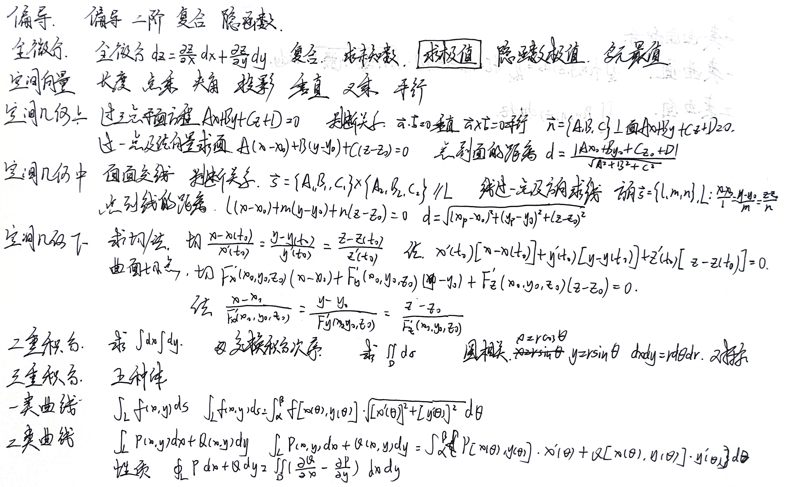
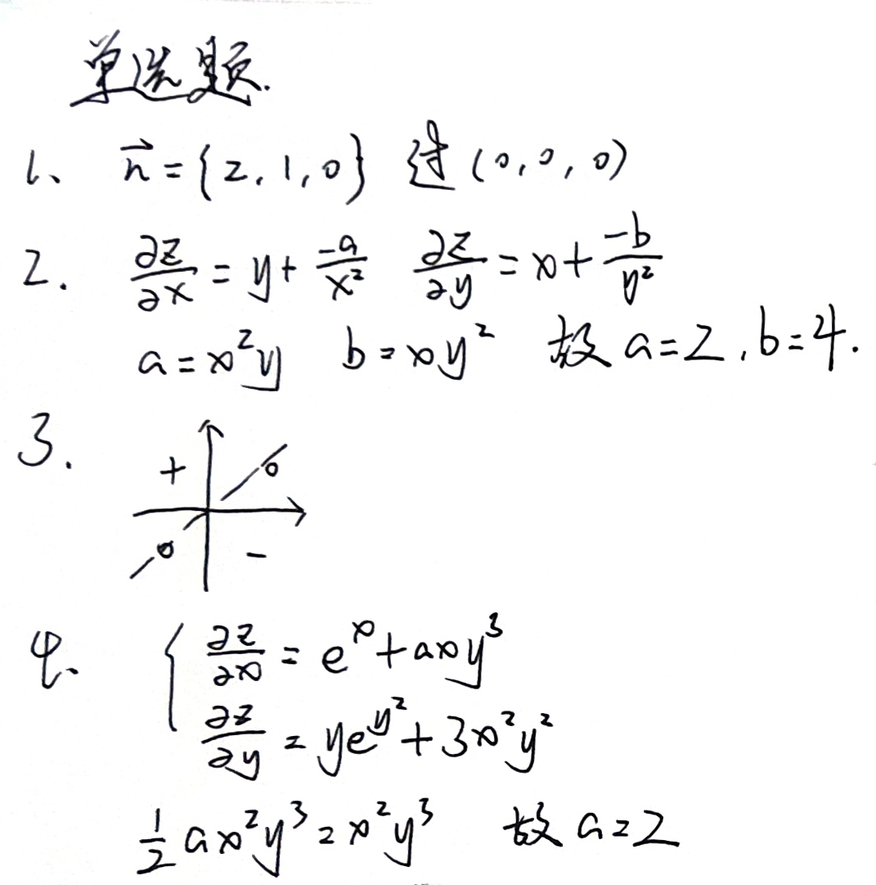
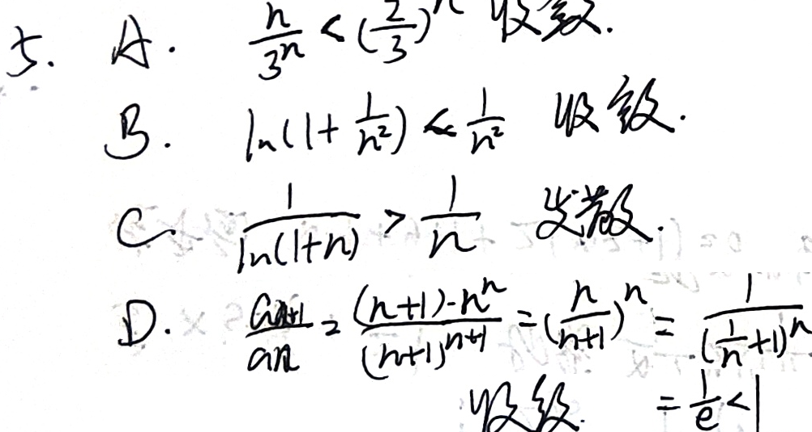
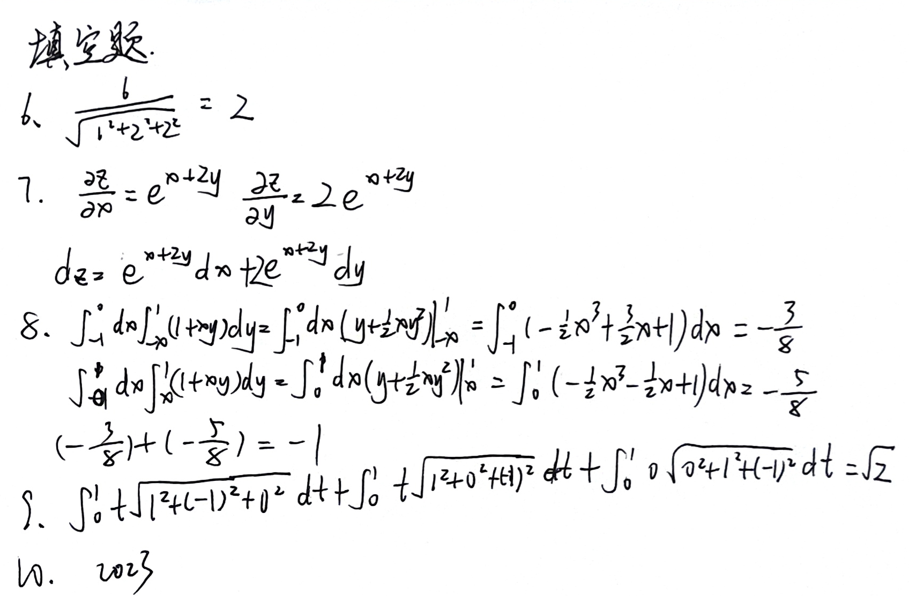
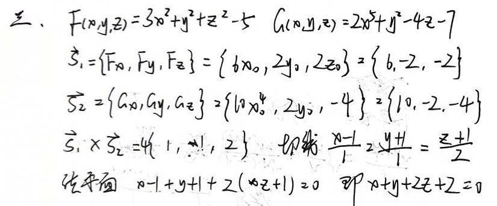

高数下学习笔记





本博客所有文章除特别声明外，均采用 CC BY-NC-SA 4.0 许可协议。转载请注明来源 coperlm's Blog！
相关推荐
.gif)
2025-03-01
rust study
本文记录了rust的学习 环境搭建vscode配置rust环境 vscode内配置快速打开Terminal，绑定openInIntegratedTerminal即可 然后下载rust依赖 因为我们都是喜家家糕守（电脑里有cpp环境），所以可以管理员运行下载这个东东即可 （没有cpp的环境我就不管了（光速逃）） 然后一路回车 安装好后，cmd里输入rustup --version & rustc --version & cargo --version测试安装成功 然后打开vscode，下载相关依赖 1234567RustRust-analyzerCodeLLDBcratesRust SyntaxRust Test LensEven Better TOML(Better TOML已弃用) 后面就可以正常使用了 新建项目 cargo new hellowrold 打开项目 cd .\helloworld\（TAB键补全） 运行项目 cargo run
.gif)
2025-04-26
配置一键博客备份并上传
本文介绍了hexo博客，如何一键备份到仓库并上传 hexo是只把生成好的页面上传，这就导致了不可逆。也就是说原文没有，就恢复不了了，所以配置了一下git保存。这样算下来就一共六条指令了，很费劲，然后写了个一键运行 原理上挺简单的，不过真正实践起来有些bug，好在最终优雅的实现了 由于我的博客有些是需要加锁的，所以不能上传到同一博客的不同分支，索性直接创建一个新的私有仓库来保存源文件 然后把新仓库的git文件，放在原来的博客里 然后进行测试，发现hexo g出现报错，经查验是因为themes里面也有一个.git文件；这个文件对咱们用途不大（应该说是基本用不到），所以可以直接删掉 然后测试一下git和hexo，不出意外可以正常运行了 下面写一个一键运行脚本，拓展名是.sh，具体代码如下： 1234567891011121314#!/bin/bashhexo cleangit add .git commit -m "Update blog content"git pushhexo generate #最后generate可以节约流量hexo deployif...
.gif)
2024-10-20
2024.10.20NISA百团题目题解
三道挺有意思的小题目，记录一下 第一题题目描述：说反话 题解： 翻转字符串即可（大雾），时间复杂度是严格线性（大大雾） 第二题题目描述：挑战者选择16/17/18张卡片和先/后手，每方每次可以掀开1/2/3张卡片；挑战者的目标是让敌手掀开最后一张卡牌 题解： 如果敌手掀开最后一张牌（即达成挑战目标），则必然最终只剩一张牌（如果剩余的牌数多于1张，则敌手可以掀开一张，这时挑战者并不会达到目标） 为了使敌手掀开最后一张牌，则只需保留一张牌，即保证挑战者掀开牌之后，剩余的牌数为4k+1即可，其中k为非负整数 在以上情况下，每一轮（指双方操作）后掀开四张卡牌即可保证挑战者一定获胜 看不懂？直接运行以下代码体验一下吧 直接使用devcpp运行以下代码即可，记得拓展名是cpp哦 123456789101112131415161718192021222324252627282930313233343536373839404142434445464748495051525354555657585960#include<iostream>using namespace...
.gif)
2024-12-02
2024年终总结&回首过去几年
算是个年终总结，也总结了半秩 总述高一大概是2020年，卡线进了沧州一中 当时成绩平平无奇，在普通班大概是排二十多名的位置 然后高一还是比较平静的吧，刚开学不久学校有信竞集训队招新，然后去考了个试，然后进了集训队，认识了很多大佬 开学后三个月，去打了CSP-S2020，T1打了三个小时，最后一个小时都在吃东西~ 赛后测试代码，T1（儒略日，大模拟）拿了10分，原本能晋级的，结果忘记给每道题都建立一个文件夹了，然后遗憾退场（悲 noip2021再战 至于whk，那时候马上就要是”得E门生“了 不过排名基本没变，大概班里二十多名，学校七八百名（物理组合） 直到高二，一直如此 高二CSP/NOIP2021前夕，几乎全天待在机房练题，whk基本没时间学 那段时间的大致安排是，上午正常上课，然后下午和晚自习就在机房里备赛；然后我那段时间基本上是上午课间的时候抓紧时间写作业，有时可以把作业（已经想不到当时是怎么卷的了）；noip打完之后回归whk，基本上白天写完作业绰绰有余，晚上可以自己写练习册了 最后结果，csp省二...
.gif)
2024-09-18
2024年9月16日到9月22日周总结清单
...
.gif)
2024-12-13
IELTS备考方案
记录如何备考雅思 笔者四级都没过就开始想IELTS了（菜菜 而且考一次2k多（穷穷 但是还是要准备一下下的 关于背单词一开始是用的百词斩来背单词 不过后面就破产了（ 然后斥巨资买了这本书背（感觉背单词，用纸质书更舒服一点） 只不过进度感人（悲 单词背完之后，理论上是刷剑雅（一般是盗版或者电子版，正版买不起一点） 12345#剑雅使用教程1️⃣剑桥雅思4-6：较早版本的题目，初学者可用于前期了解题型2️⃣剑桥雅思7-9：开始全面的模拟练习，包括听、说、读、写四个部分3️⃣剑桥雅思10-12：版本难度与现在的雅思考试接近，模考冲刺反复刷，检查和修正自己的错误4️⃣剑桥雅思13-19：最新版本的题目，应该是最接近当前雅思考试的，可以用来考前练习，检验自己的备考效果
评论
WalineDisqus
.gif)
.gif)
.gif)
.gif)